"Harry Potter"
Seria siedmiu powieści fantasy autorstwa brytyjskiej pisarki J.K. Rowling, wydawanych od
1997 do 2007 roku. Cykl przedstawia świat magii, czyli społeczność czarodziejów, istniejącą równolegle
do świata niemagicznego, tak zwanego mugolskiego. Głównymi bohaterami są nastoletni Harry Potter oraz
jego przyjaciele: Ron Weasley i Hermiona Granger, uczniowie Szkoły Magii i Czarodziejstwa w Hogwarcie.
Najważniejszym wątkiem powieści jest walka czarodziejów, w szczególności Harry’ego, z czarnoksiężnikiem
Lordem Voldemortem, dążącym do zyskania nieśmiertelności i przejęcia władzy w świecie magii.
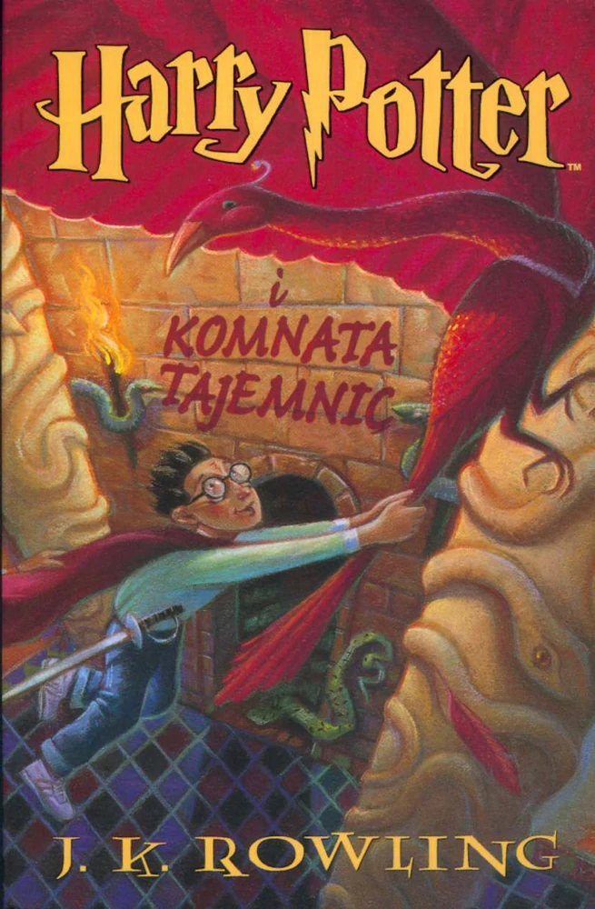
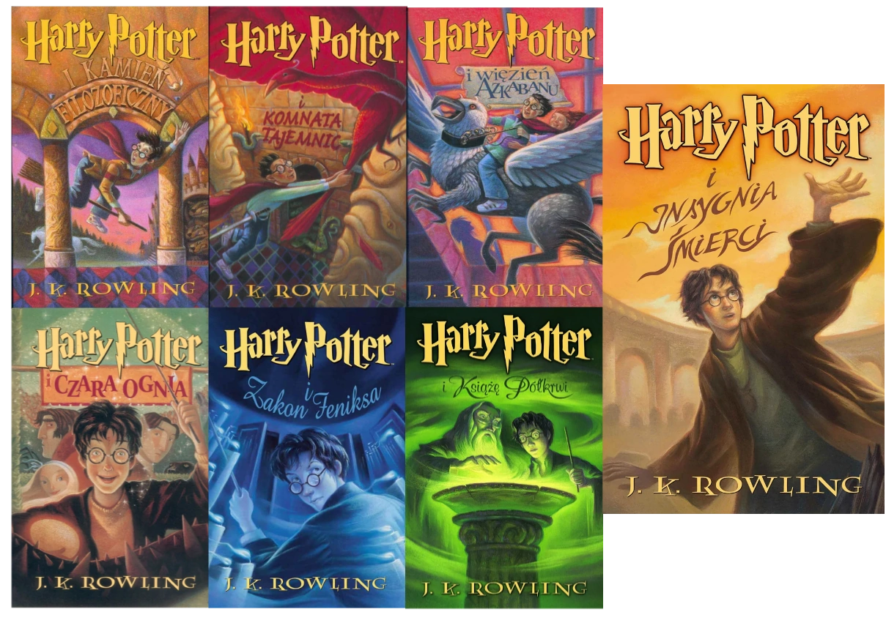
"Czerwona królowa"
Seria czterech powieści fantasy autorstwa amerykańskiej pisarki Vicotrii Aveyard,
wydawanych od 2015 do 2018 roku. Cykl przedstawia alternatywny świat rządzony przez tzw. "Srebrnych" -
osoby srebrnokrwiste posiadające nadprzyrodzone zdolności, którym podporządkować muszą się
czerwonokrwiste osoby
nieposiadające szczególnej mocy. W momencie, w którym okazuje się, że główna bohatarka - posiadająca
czerwoną krew Mare kontroluje błyskawice, cały dotychczasowy porządek świata ulega zniszczeniu.
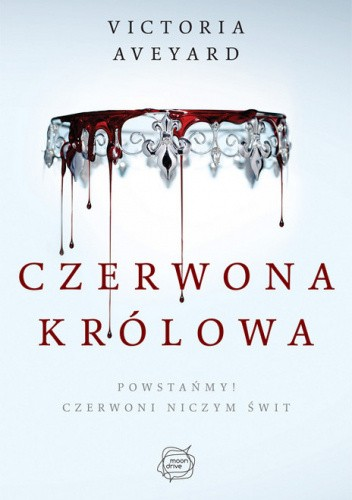
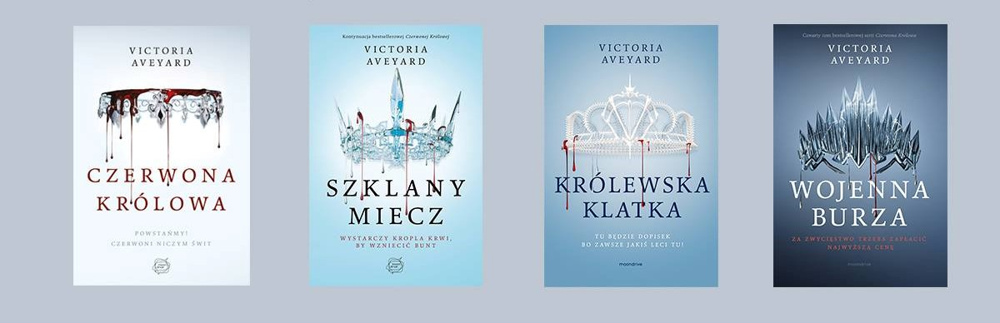
"Będziesz tam?"
Jedna z wielu powieści pisarza Gulliame Musso wydana w 2006 roku. Książka opowiada o
znanym chirurgu - Elliocie Cooperze zmagającym się ze śmiertelną chorobą. Największą radością jego życia
jest dorosła już córka Angie, największym pragnieniem – jeszcze raz ujrzeć ukochaną Ilenę, zmarłą
tragicznie przed
trzydziestoma laty. Jego marzenie może się spełnić – Elliot otrzymuje w prezencie kilka pigułek
umożliwiających podróż w czasie. Przez ciekawość zażywa jedną z nich i wkracza na ścieżkę
nieprawdopodobnej przygody – cofa się w przeszłość, po raz kolejny przeżywa młodość. Jednak każda zmiana
dokonana przez niego w przeszłości, powoduje zmianę teraźniejszości, która w niektórych przypadkach
staje się gorsza od
pierwszej wersji.
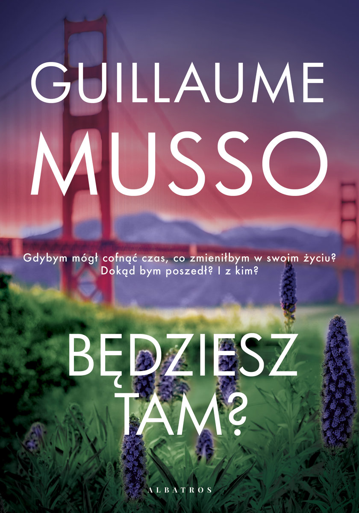
"Miasto Kości"
Pierwsza część serii "Dary Anioła" sześciu książek napisanych przez Cassandrę Clare, wydanych w latach
2007–2014. Opowiada o przygodach Clary Fray, która wiedzie życie zwykłej nastolatki do momentu, w którym
zostaje wciągnięta w świat Nocnych Łowców i
poznaje swoje przeznaczenie.
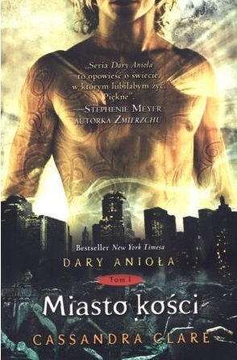
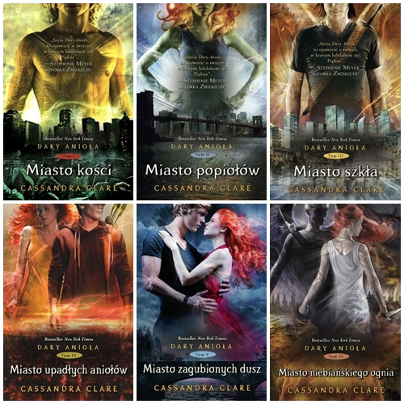
"Rywalki"
Pierwsza część serii Selekcja - powieści fantastyczno-przygodowych autorstwa amerykańskiej pisarki Kiery
Cass. Opowiada o
równoległym świecie, gdzie społeczeństwo podzielone jest na kasty, które definiują jakość ich życia.
Historia rozpoczyna się w chwili, gdy trzydzieści pięć młodych dziewcząt bierze udział w Eliminacjach -
konkursie o tytuł księżniczki. Jedną z nich jest America Singer, która startuje wyłącznie po to, by
poprawić byt swojej rodziny, jednak wraz z upływem czasu jej niechęć i pogarda dla świata "Jedynek"
zostaje zastąpiona miłością do księcia, który okazuje się być zupełnie inną sobą niż główna bohaterka
zakłada.
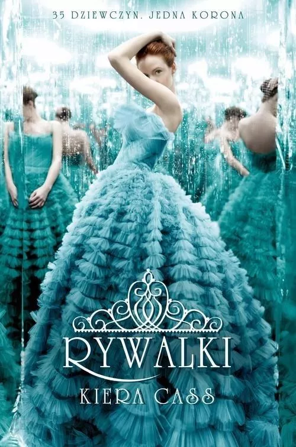
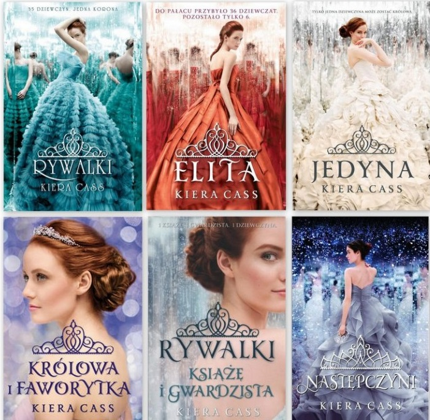
"Szeptem"
Seria książek amerykańskiej pisarki Becci Fitzpatrick, wydawanych od 2009 do 2012 roku. Historia opowiada
o losach nastoletniej Nory Grey, która spotyka tajemniczego Patcha, który okazuje się być upadłym
aniołem. Sytuacja komplikuje się w momencie, w którym na jaw wychodzi pochodzenie głównej bohaterki.
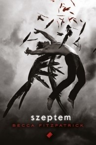
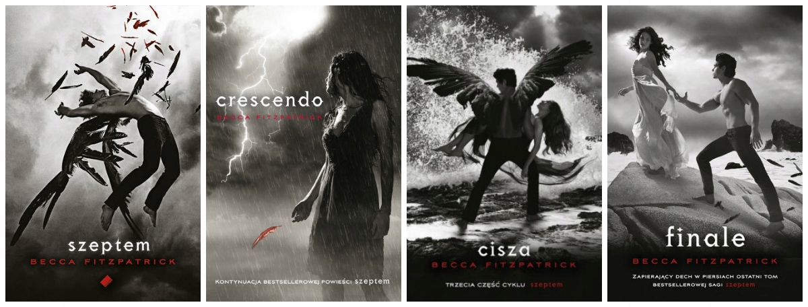
"Igrzyska Śmierci"
Pierwsza z trzech części serii o tym samym tytule, napisanych przez Suzanne Collins w latach 2008-2010.
Akcja toczy się w totalitarnym państwie powstałym na gruzach Stanów Zjednoczonych, w którym
społeczeństwo podzielone jest na 12 dystryktów. 74 lata przed wydarzeniami opisywanymi w książce miejsce
miał bunt. Na pamiątkę tych wydarzeń co roku organizowane są Głodowe Igrzyska - krwawe zawody, na które
każdy dystrykt ma obowiązek dostarczyć chłopaka i dziewczynę w wieku od 12 do 18 lat wyłonionych podczas
tzw. dożynek. Gdy główna bohaterka - Katniss Everdeen - trafia na arenę i obnaża słabości Kapitolu, w
sercach ludzi budzi się nadzieję na wyzwolnie.
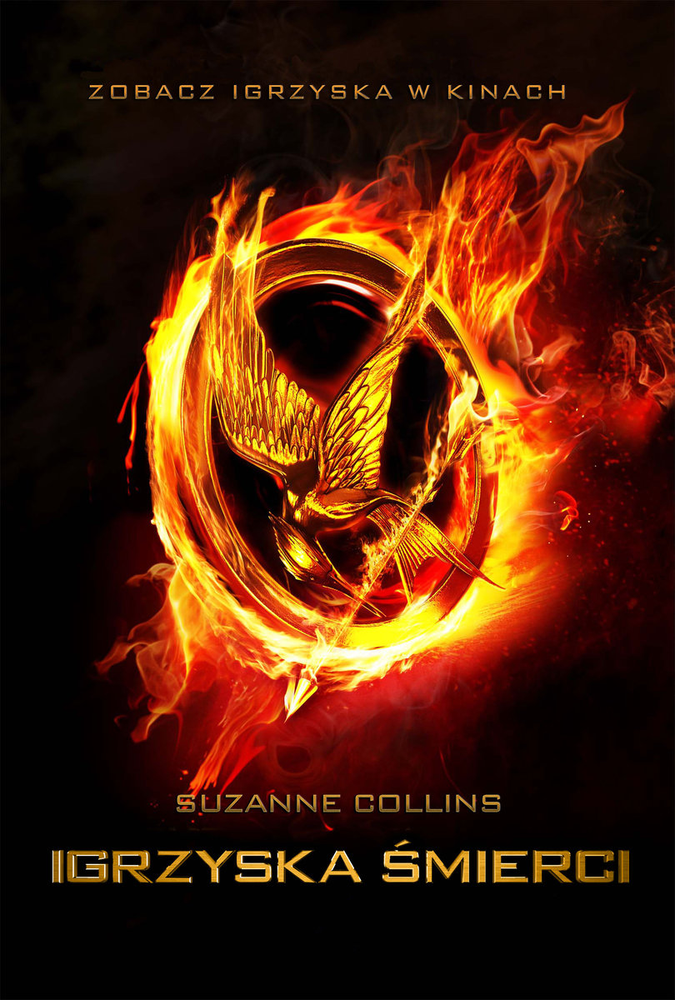
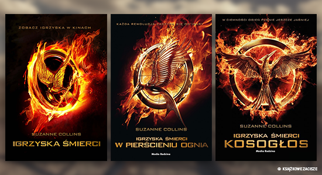
Strona Główna